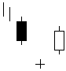

تحلیل تکنیکال
الگوهای کندل استیک ها
Bullish Abandoned Baby

این الگو (کودك رها شده صعودي) در بازار فارکس خیلی کم به وجود می آید. در انتهاي روند نزولی پس از یک شمع نزولی
قوي شکافی نزولی تا شمع بعدي بوجود می آید شمع بعدي بصورت ستاره (داجی) بسته می شود و فاصله بسته شدنش تا
شمع بعدي نیز داراي شکاف است. با سفید (صعودي) بسته شدن بدنه شمع سوم اخطار پایان روند نزولی و آغاز روند صعودي
به وجود می آید.